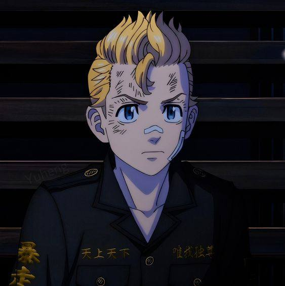
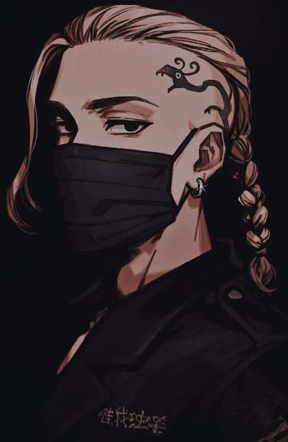

Takemichi Hanagaki

Takemichi is the protagonist of the series. He is a 26-year-old office worker who travels back in time to his middle school days. He is determined to change the future and save his ex-girlfriend, Hinata Tachibana.
Manjiro Sano (Mikey)

Mikey is the leader of the Tokyo Manji Gang. He is known for his strong sense of justice and loyalty to his gang members. He becomes an important ally to Takemichi.
Ken Ryuguji (Draken)
